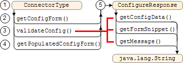

Google Search Appliance software version 6.2
Connector manager version 2.4.0
Posted December 2009
This section describes how a connector provides a configuration form to the Admin Console, how connectors are instantiated, and about the properties file that contains information from the configuration form. The connector manager uses the properties file information when instantiating a connector.
This section helps you create a configuration form for the Admin Console, verify that required information is filled in, and if necessary return the form to the Admin Console. The Javadoc for the SPI is available in open source. For connector terminology definitions, see the Google Enterprise Glossary.
Chapters: Home, About This Guide, Introduction, Getting Started, SPI Overview, Traversing Documents,
Authentication, Authorization, Configuration, Appendix A: Building a Debug Connector Manager
Programmatically, connectors have two parts, a type and an instance. The connector type identifies a connector to the connector manager and generates the configuration form that appears in the Admin Console of a search appliance. The connector instance requests documents, metadata, and URLs from the API on the content management system to acquire documents.
The following illustration shows how Spring Framework communicates with each connector component:
Communication process:
connectorType.xml file to instantiate the ConnectorType at the same time that Spring instantiates the context of the connector manager. When you develop your connector, you create the connector type that specifies the XHTML for a configuration form. ConnectorType object is consulted for the configuration form. .properties file. connectorDefaults.xml and connectorInstance.xml files. Spring Framework uses the bean definitions in the connectorDefaults.xml and connectorInstance.xml files to create a connector instance. The connector instance communicates with the content management system through its API.This section describes each of these components in greater detail.
For more information on Spring Framework, see Understanding Spring Framework's Relation to a Connector. To understand more about the properties file, see How the Connector Manager Populates a Properties File.
Additional conceptual information is available in ConnectorType Interface and SimpleConnectorType Class and Understanding the Connector Type and Implementation Processes
The interface between the connector and the search appliance is the configuration form that you provide so that administrators can configure parameters about a content management system.
The connector type XHTML configuration form enables an administrator to specify parameters that are unique to a content management system. This form should contain the location and access credentials so that the connector manager can log into the content management system to start a session for handling traversal, authentication, and authorization request.
The connector name in the Admin Console must be all lowercase.
The section of the configuration form that a connector supplies consists of well-formed XHTML <tr> rows in a table that the connector manager inserts into a larger table. The connector manager handles all other XHTML tags for the page including adding a button to the page for submitting form values. The table rows that you specify consist of two (and only two) columns. The first column describes the configuration element and the second is an XHTML input field. The connector manager also supplies input fields for scheduling when the connector runs and how many documents per minute that the connector traverses.
You can use the CSS style= attribute in the <tr> or <td> as well as text formatting tags such as for bolding (<b>) or italics (<i>). For more information on possible CSS style= attribute parameters, see the W3.org CSS site. You can use UTF-8 character encoding to localize prompts.
The traversal schedule rate and schedule prompts are localized by Google for each supported Admin Console translation. Your connector needs to supply translated prompt versions for regions in which your connector should appear. You can use the java.util.ResourceBundle class to manage localizations. For more information, see the ResourceBundle class at the Sun Java site.
If the configuration form snippet contains script code, the code must be contained within a CDATA block in this example:
<script language="JavaScript" type="text/javascript">
//<![CDATA[
function checkSelect() {
var opt = document.getElementById('Version');
if (opt == 'version1') {
alert('Version1 Selected');
} else {
alert('Version1 Not Selected');
}
}
//]]>
</script>
<tr>
<td colspan="1" rowspan="1">
<div style="float: left;">Select Version</div></td>
<td colspan="1" rowspan="1">
<select id="SPType" name="Version" onchange="checkSelect();" size="1">
<option selected="" value="version1">Version 1</option>
<option value="version2">Version 2</option>
</select>
</td>
</tr>
An example of a configuration form from TestConnectorA follows. (TestConnectorA is available if you build a debug connector manager. For more information, see Building a Debug Connector Manager.)
This code provides one column of labels (Username, Password, Color, and RepositoryFile) and another column of input fields:
<tr> <td>Username</td> <td><input type="text" name="Username"/></td> </tr> <tr> <td>Password</td> <td><input type="password" name="Password"/></td> </tr> <tr> <td>Color</td> <td><input type="text" name="Color"/></td> </tr> <tr> <td>RepositoryFile</td> <td><input type="text" name="RepositoryFile"/></td> </tr>
The table rows appear in the connector configuration form on the Admin Console as follows:
In the Admin Console, when you add a connector, the configuration type appears. After you choose the connector type and click Get Configuration Form, the configuration form displays. The connector manager calls the methods in the ConnectorType interface to get, validate, and update the configuration form.
The ConnectorType interface instantiation sequence is as follows:

The call sequence is as follows:
ConnectorType object using the parameters in the connectorType.xml file. getConfigForm method to provide an XHTML configuration form in which an administrator can specify connector parameter values in the Admin Console. validateConfig method to verify the form information. The validateConfig method can also call the ConnectorFactory class to instantiate a connector and verify that the connector instance can communicate with the content management system. If validation fails, the validateConfig method adds a message to the configuration form for the administrator to correct the form information. getPopulatedConfigForm method to retrieve stored information and create an XHTML form with the information. ConfigureResponse object that can contain a configuration form and an optional message to display on the Admin Console if corrections are needed. For more information on when the connector manager calls the SPI method, see Understanding the Connector Type and Implementation Processes .
Note: Comments, import statements, and logging code in the examples that follows have been removed for brevity. Refer to the original code for copyright and open source license information before using this code for any programming purpose. The code is from the open source FileNet connector available at http://google-enterprise-connector-file.googlecode.com.
The following example lists the HTML tag variables that the getConfigForm and validateConfig methods can use to create tags and to create the table rows in the configuration form:
private static final String CLOSE_ELEMENT = "/>"; private static final String OPEN_ELEMENT = "<"; private static final String TR_END = "</tr>\r\n"; private static final String TD_END = "</td>\r\n"; private static final String TD_START = "<td>"; private static final String TR_START = "<tr>\r\n";
The connector manager calls the getConfigForm method after an administrator adds a connector. The getConfigForm method creates the configuration form and returns a ConfigureResponse class object containing the form. The first null argument in the ConfigureResponse(null, initialConfigForm) constructor statement is a message to the administrator, which the connector uses in the validateConfig method to request that fields be filled in, but in the getConfigForm method, you set this argument to an empty string (the parameter is ignored). The connector can use the message to the administrator to indicate which required fields need information or to indicate other error conditions. The message is plain text without script directives and may be text, null, or an empty string.
public ConfigureResponse getConfigForm(Locale language) {
resource =
ResourceBundle.getBundle("FileConnectorResources", language);
if (initialConfigForm != null) {
return new ConfigureResponse(null, initialConfigForm);
}
if (keys == null) {
throw new IllegalStateException();
}
this.initialConfigForm = makeConfigForm(null);
return new ConfigureResponse(null, initialConfigForm);
}
The following code lists the makeConfigForm helper method that builds a config form with different elements depending on whether or not the content management system is public or contains controlled-access documents. If the documents in the content management system are all publicly readable, then the search appliance does not need username and password credentials to access the documents for traversal.
private String makeConfigForm(Map configMap) {
StringBuffer buf = new StringBuffer(2048);
String value = "";
for (Iterator i = keys.iterator(); i.hasNext();) {
String key = (String) i.next();
if (configMap != null) {
value = (String) configMap.get(key);
}
if (key.equals(ISPUBLIC)) {
appendCheckBox(buf, key, resource.getString(key), value);
appendStartHiddenRow(buf);
buf.append(OPEN_ELEMENT);
buf.append(INPUT);
appendAttribute(buf, TYPE, HIDDEN);
appendAttribute(buf, VALUE, "false");
appendAttribute(buf, NAME, key);
appendEndRow(buf);
value = "";
} else {
if (!key.equals(FNCLASS) && !key.equals(AUTHENTICATIONTYPE)
&& !key.equals(WHERECLAUSE) && !key.equals(FILEPATH)) {
appendStartRow(buf, resource.getString(key));
} else {
appendStartHiddenRow(buf);
}
buf.append(OPEN_ELEMENT);
buf.append(INPUT);
if (key.equalsIgnoreCase(PASSWORD)) {
appendAttribute(buf, TYPE, PASSWORD);
} else if (key.equals(FNCLASS)
|| key.equals(AUTHENTICATIONTYPE)
|| key.equals(WHERECLAUSE)
|| key.equals(FILEPATH)) {
appendAttribute(buf, TYPE, HIDDEN);
} else {
appendAttribute(buf, TYPE, TEXT);
}
appendAttribute(buf, NAME, key);
appendAttribute(buf, VALUE, value);
appendEndRow(buf);
value = "";
}
}
if (configMap != null) {
Iterator i =
new TreeSet(configMap.keySet()).iterator();
while (i.hasNext()) {
String key = (String) i.next();
if (!keySet.contains(key)) {
String val = (String) configMap.get(key);
buf.append("<input type=\"hidden\" value=\"");
buf.append(val);
buf.append("\" name=\"");
buf.append(key);
buf.append("\"/>\r\n");
}
}
} //end for
return buf.toString();
}
The next section appends table row start (TR_START) and table column start (TD_START) tags to the configuration form for the hidden form elements.
private void appendStartHiddenRow(StringBuffer buf) {
buf.append(TR_START);
buf.append(TD_START);
}
The next section creates a new table row in the configuration form.
private void appendStartRow(StringBuffer buf,
String key) {
buf.append(TR_START);
buf.append(TD_START);
buf.append(key);
buf.append(TD_END);
buf.append(TD_START);
}
The next section appends close element (CLOSE_ELEMENT), table column end (TD_END), and table row end (TR_END) tags to the current table row.
private void appendEndRow(StringBuffer buf) {
buf.append(CLOSE_ELEMENT);
buf.append(TD_END);
buf.append(TR_END);
}
The next section appends an attribute to the form.
private void appendAttribute(StringBuffer buf,
String attrName, String attrValue) {
buf.append(" ");
buf.append(attrName);
buf.append("=\"");
buf.append(attrValue);
buf.append("\"");
if (attrName == TYPE && attrValue == TEXT) {
buf.append(" size=\"50\"");
}
}
The last section adds a check box to the form.
private void appendCheckBox(StringBuffer buf,
String key, String label, String value) {
buf.append(TR_START);
buf.append(TD_START);
buf.append(OPEN_ELEMENT);
buf.append(INPUT);
buf.append(" " + TYPE + "=" + CHECKBOX);
buf.append(" " + NAME + "=\"" + key + "\" ");
if (value != null && value.equals("on")) {
buf.append(CHECKED);
}
buf.append(CLOSE_ELEMENT);
buf.append(label + TD_END);
buf.append(TR_END);
}
The validateConfig method ensures that the administrator fills in all required information. If you use the ConnectorFactory interface in your connector, the validateConfig method can instantiate the connector to ensure that the content management system is available for access. This method can modify the properties map and instantiate a connector with slightly different properties then those that are received from the content management system.
In the code that follows, this method uses the ConnectorFactory interface to create a connector, passes the connector a modified properties map, and makes sure that the connector can access the content management system. If the connector catches an error from the content management system, it adds a message to the configuration form and sends the form back to the Admin Console so that corrected information can be added. The message is inserted in bright red (#FF0000) font to ensure that the message is readily visible in the configuration form.
public ConfigureResponse validateConfig(Map configData,
Locale language, ConnectorFactory connectorFactory) {
resource =
ResourceBundle.getBundle("FileConnectorResources", language);
String form = null;
String validation = validateConfigMap(configData);
FileSession session;
if (validation.equals(null)) {
try {
Properties p = new Properties();
p.putAll(configData);
String isPublic = (String) configData.get(ISPUBLIC);
if (isPublic == null) {
p.put(ISPUBLIC, "false");
}
FileConnector conn = (FileConnector) ConnectorFactory.makeConnector(p);
session = (FileSession) conn.login();
session.getTraversalManager();
testWorkplaceUrl((String) configData
.get("workplace_display_url"));
} catch (RepositoryException e) {
String extractErrorMessage = e.getCause().getClass().getName();
String bundleMessage;
try {
bundleMessage = resource.getString(extractErrorMessage);
} catch (MissingResourceException mre) {
bundleMessage = resource.getString("DEFAULT_ERROR_MESSAGE")
+ " " + e.getMessage();
}
form = makeConfigForm(configData);
return new ConfigureResponse("<p><font color=\"#FF0000\">"
+ bundleMessage + "</font></p>",
"<p><font color=\"#FF0000\">" + bundleMessage
+ "</font></p>" + "<br>" + form);
}
return null;
}
form = makeConfigForm(configData);
return new ConfigureResponse(resource.getString(validation + "_error"),
"<p><font color=\"#FF0000\">"
+ resource.getString(validation + "_error")
+ "</font></p>" + "<br>" + form);
}
In the previous code block, the function returns null to indicate that the configuration is valid.
The next section validates the content management system authentication information:
private String validateConfigMap(Map configData) {
for (Iterator i = keys.iterator(); i.hasNext();) {
String key = (String) i.next();
String val = (String) configData.get(key);
if (!key.equals(FNCLASS)
&& !key.equals(AUTHENTICATIONTYPE)
&& !key.equals(WHERECLAUSE)
&& !key.equals(FILEPATH)
&& !key.equals(ISPUBLIC)
&& (val == null || val.length() == 0)) {
return key;
}
}
return "";
}
The following testWorkplaceUrl method is a helper method that
establishes a new HTTP client to the content management system.
private void testWorkplaceUrl(String workplaceServerUrl)
throws RepositoryException {
HttpClient client = new HttpClient();
GetMethod getMethod = new GetMethod(workplaceServerUrl);
try {
int status = client.executeMethod(getMethod);
if (status != 200) {
throw new
RepositoryException("status Http request returned a "
+ status + " status", new HttpException("status is "
+ status));
}
} catch (HttpException e) {
RepositoryException re =
new RepositoryException("HttpException", e);
throw new RepositoryException(re);
} catch (IOException e) {
RepositoryException re =
new RepositoryException("IOException", e);
throw new RepositoryException(re);
}
}
If a connector uses the ConnectorFactory interface, a connector can verify the accuracy of the information that an administrator specifies in the configuration form.
The ConnectorFactory.makeConnector method creates a connector instance with the configuration form information that the administrator supplies. Although a connector instantiation can vary with each connector implementations, ConnectorFactory makes no assumptions.
In the Livelink connector, the validateConfig method verifies that the content management system host, port, user name, and password are correct, and that the Livelink server version is one that the connector supports. This checking occurs when the validateConfig method calls the Connector.login method on the connector that the ConnectorFactory interface instantiates.
The following example provides these checks:
// Instantiate a connector to check connectivity.
LivelinkConnector connector = null;
try {
connector = (LivelinkConnector)
connectorFactory.makeConnector(config);
} catch (Throwable t) {
LOGGER.log(Level.WARNING, "Failed to create connector", t);
...
}
...
// Login to the content management system server.
try {
connector.login();
} catch (LivelinkException e) {
return getResponse(e.getLocalizedMessage(bundle), bundle,
config, formContext);
} catch (ConfigurationException c) {
LOGGER.log(Level.WARNING, "Error in configuration", c);
return getResponse(
errorInConfiguration(bundle, c.getLocalizedMessage(bundle)),
bundle, config, formContext);
} catch (Throwable t) {
LOGGER.log(Level.WARNING, "Error in configuration", t);
return getResponse(
errorInConfiguration(bundle, t.getLocalizedMessage()),
bundle, config, formContext);
}
The getPopulatedConfigForm method is called when an administrator clicks Edit for a connector in the Connector Administration > Connectors page in the Admin Console.
public ConfigureResponse getPopulatedConfigForm(Map configMap,
Locale language) {
resource =
ResourceBundle.getBundle("FileConnectorResources", language);
ConfigureResponse response = new ConfigureResponse(null,
makeConfigForm(configMap));
return response;
}
The next section shows how to create a message on the configuration form to inform the administrator what fields in the form to fix.
new ConfigureResponse(resource.getString(validation + "_error"), "<p><font color=\"#FF0000\">" + resource.getString(validation + "_error") + "</font></p>" + "<br>" + form);
To localize a connector, add support for internationalization. The connector follows Java internationalization conventions. You can add internationalization with resource bundles as .properties files and then build them into your connector. A connector can also specify a Locale parameter to the methods in the ConnectorType interface.
The SPI supports UTF-8 characters.
To create a ConnectorType object and a connector instance, Spring Framework works with the following components:
ConnectorType interface
Code that creates and verifies the configuration form that appears in the Admin Console. Your connector needs to implement this interface to create a configuration form.
connectorType.xml file
A configuration file for the ConnectorType object. The contents of this file are arbitrary depending on what you need to store for the ConnectorType object in your connector. Because the Spring Framework uses this XML file to help generate a connector instance, provide <bean> attributes to identify the connector and its location.
The example connectorType.xml file that follows is from the open source Filenet connector. The use of the connectorType.xml file for specifying the labels for the configuration form is your decision and does not imply that you are required or even recommended to have this detail in this XML file. This XML file should be seen as the parameter file for the ConnectorType object. You may choose to expose the configuration form fields here or not as required by your design.
The following example connectorType.xml file provides the configuration form fields:
<?xml version="1.0" encoding="UTF-8"?>
<!DOCTYPE beans PUBLIC "-//SPRING//DTD BEAN//EN"
"http://www.springframework.org/dtd/spring-beans.dtd">
<beans>
<bean id="Filenet_P8_3.5.2"
class="com.google.enterprise.connector.file.FileConnectorType">
<property name="configKeys">
<list>
<value>login</value>
<value>password</value>
<value>object_store</value>
<value>path_to_WcmApiConfig</value>
<value>workplace_display_url</value>
<value>object_factory</value>
<value>authentication_type</value>
<value>additional_where_clause</value>
<value>is_public</value>
</list>
</property>
</bean>
</beans>
The code is as follows.
| Element | Description |
|---|---|
id attribute |
The name of the connector that appears in the Admin Console. There can be no spaces in the id= attribute value. |
class attribute |
The location of the source files for the configuration form. In this case, the source code is in the FileConnectorType.java file in the /com/google/enterprise/connector/file folder, which is relative to the base folder of the connector source folder. |
property tag |
The setter that Spring creates to set the values in the configuration form. In this case, Spring creates the setConfigKeys property in the FileConnectorType class as a setter. |
list tag |
A collection list of values. |
A simpler example of the connectorType.xml file is in the Google Open Text Livelink Connector:
<?xml version="1.0" encoding="UTF-8"?> <!DOCTYPE beans PUBLIC "-//SPRING//DTD BEAN//EN" "http://www.springframework.org/dtd/spring-beans.dtd"> <beans> <bean name="Livelink_Enterprise_Server" class="com.google.enterprise.connector.otex.LivelinkConnectorType"/> </beans>
This example provides only a connector type name and the location of the LivelinkConnectorType.java object.
The connectorInstance.xml file provides placeholders for the connector manager to populate an instance of your connector. The connector manager substitutes the values in the connectorInstance.xml file from the information that the connector manager acquires from the configuration form.
The example that follows is from the open source FileNet connector available at the http://google-enterprise-connector-file.googlecode.com site.
In the example that follows, the bean id in the connectorInstance.xml file is an arbitrary string that is not used by the connector manager. There can be no spaces in the bean id string. The class attribute lists the location of the connector source, in this case at in the FileConnector.java file in the
/com/google/enterprise/connector/file folder. The property tags shown in the snippet that follows associate the configuration form fields with the variables defined the FileConnector.java file.
<?xml version="1.0" encoding="UTF-8"?>
<!DOCTYPE beans PUBLIC "-//SPRING//DTD BEAN//EN"
"http://www.springframework.org/dtd/spring-beans.dtd">
<beans>
<bean id="FileConnectorInstance"
class="com.google.enterprise.connector.file.FileConnector">
<property name="login" value="${login}" />
<property name="password" value="${password}" />
<property name="object_store" value="${object_store}" />
The corresponding entries in the FileConnector.java file are as follows--properties that get and set each value:
public class FileConnector implements Connector {
...
private String login;
private String password;
private String object_store;
...
public String getLogin() {
return login;
}
public void setLogin(String login) {
this.login = login;
}
public String getPassword() {
return password;
}
public void setPassword(String password) {
this.password = password;
}
public String getObject_store() {
return object_store;
}
public void setObject_store(String objectStoreName) {
this.object_store = objectStoreName;
}
The connectorInstance.xml file example property statements continue as follows.
<property name="path_to_WcmApiConfig"
value="webapps/connector-manager/WEB-INF/WcmApiConfig.properties" />
<property name="workplace_display_url"
value="${workplace_display_url}" />
<property name="object_factory"
value="com.google.enterprise.connector.file.filejavawrap.FnObjectFactory" />
<property name="authentication_type" value="api" />
<property name="additional_where_clause"
value="${additional_where_clause}" />
<property name="is_public" value="${is_public}" />
The included_meta property corresponds to the metadata that the FileNet content management system provides in its API:
<property name="included_meta">
<set>
<value>ClassificationStatus</value>
<value>ContentSize</value>
<value>CurrentState</value>
<value>DateCreated</value>
<value>DateLastModified</value>
<value>DocumentTitle</value>
<value>Id</value>
<value>IsCurrentVersion</value>
<value>IsFrozenVersion</value>
<value>IsReserved</value>
<value>LastModifier</value>
<value>LockTimeout</value>
<value>LockToken</value>
<value>MajorVersionNumber</value>
<value>MimeType</value>
<value>MinorVersionNumber</value>
<value>Name</value>
<value>Owner</value>
<value>StorageLocation</value>
<value>VersionStatus</value>
</set>
</property>
The excluded_meta property indicates the metadata in the
content management system that the connector does not need to address:
<property name="excluded_meta">
<set>
<value>AccessMask</value>
<value>ActiveMarkings</value>
<value>Annotations</value>
<value>AuditedEvents</value>
<value>ClassDescription</value>
<value>ContentElements</value>
<value>ContentElementsPresent</value>
<value>ContentRetentionDate</value>
<value>CreatePending</value>
<value>CurrentVersion</value>
<value>DateContentLastAccessed</value>
<value>DeletePending</value>
<value>DestinationDocuments</value>
<value>DocumentLifecyclePolicy</value>
<value>EntryTemplateId</value>
<value>EntryTemplateLaunchedWorkflowNumber</value>
<value>EntryTemplateObjectStoreName</value>
<value>FoldersFiledIn</value>
<value>IsInExceptionState</value>
<value>IsVersioningEnabled</value>
<value>LockOwner</value>
<value>ObjectStore</value>
<value>ObjectType</value>
<value>OIID</value>
<value>OwnerDocument</value>
<value>PendingOperation</value>
<value>Properties</value>
<value>PublicationInfo</value>
<value>ReleasedVersion</value>
<value>Reservation</value>
<value>ReservationType</value>
<value>SecurityParent</value>
<value>SecurityPolicy</value>
<value>SourceDocument</value>
<value>StoragePolicy</value>
<value>UpdatePending</value>
<value>VersionSeries</value>
<value>WorkflowSubscriptions</value>
</set>
</property>
The file ends with these closing tags.
</bean> </beans>
A connector.properties file provides information and file access to a connector from the values that an administrator specifies in the configuration form. Spring Framework uses the data in the properties file to create a connector instance.
Note: Any property name that contains the string password is encrypted in the properties file. For example, notAPasswordAtAll is encrypted.
The connector manager creates the properties file and puts the form in a folder on the servlet container. For more information, see Creating a Connector Instance XML File. See also, How the Connector Manager Populates a Properties File.
If you are using Apache Tomcat as your servlet container, and the connector manager .war file has the default name connector-manager.war, then the connector.properties file is placed in the following location:
Tomcat/webapps/connector-manager/WEB-INF/connectors/ctype/cname/cname.properties
Where:
bean id value in the connectorType.xml file. This value also appears in the Admin Console in the connector Type drop-down list. In the case of these examples, the connector.properties file's path would be:
Tomcat/webapps/connector-manager/WEB-INF/connectors/TestConnectorA/MyConn/MyConn.properties
The example MyConn.properties file contains the following information (lines wrapped for readability):
#Tue Oct 16 14:18:02 PDT 2007 Username= googleConnectorWorkDir=/usr/local/google/apps/apache-tomcat-5.5.23/ webapps/connector-manager/WEB-INF/connectors/TestConnectorA/MyConn RepositoryFile= Password=password\=\= Color= googleWorkDir=/usr/local/google/apps/apache-tomcat-5.5.23/webapps/ mycomputer:/usr/local/google/apps/apache-tomcat-5.5.23/webapps/connector-manager/WEB-INF/connectors/MyConn/test
The connector manager inserts the values for RepositoryFile, Password, and Color from the data that an administrator supplies in the configuration form in the Admin Console.
See Testing a Connector for information about the Username, RepositoryFile, Password, and Color fields in TestConnectorA. See File Access for information on the googleConnectorWorkDir and googleWorkDir fields.
The connector manager creates the connector.properties file as follows:
This option displays the Connector Administration > Connectors > Add Connector page.
ConnectorType.getConfigForm method, which returns an XHTML configuration form that the connector manager passes back to the search appliance and displays on the Admin Console. ConnectorType.validateConfig method to verify that the required form information is present. If needed, validateConfig returns the form back to the Admin Console to request the administrator to add missing information. The validateConfig method can also be used to expand choices on a form, for example, if the form has options that an administrator can expand to indicate more information for a parameter. The connector manager performs the following for editing an existing configuration form:
ConnectorType.getPopulatedConfigForm method to create the configuration form from the properties. ConnectorType.validateConfig method to verify that the required form information is present. If needed, validateConfig returns the form back to the Admin Console to request missing information.